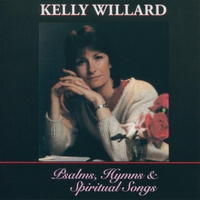

|
�@ |
�i本�{��ユ�U�j |
|
I cast all my cares upon You
|
|
|
|
|
|
�@ |
�@ |


-
CARES CHORUS Acoustic
Worship (With Lyrics) : Kelly Willard ...
-
Cares Chorus | Kelly
Willard - YouTube
Care
Chorus
本�{��ユ�U-
YouTube
0957
https://hymnary.org/text/i_cast_all_my_cares_upon_you
Willard, Kelly
1956-
［迭�AΡ�@��］

https://hymnary.org/person/Willard_Kelly
Kelly Willard (born
on August 18, 1956) is a contemporary
Christian musician best known for her praise
and worship recordings. She was featured as a soloist on projects from Integrity, Vineyard
Music, and Maranatha!
Music. In addition she sang duets and background vocals with such artists
as Dion
DiMucci, Lenny
LeBlanc, Amy Grant, Ricky
Skaggs, Paul
Overstreet, Twila Paris, Steve
Green, Fernando Ortega, Keith
Green, Buddy
Greene, Jim Cole and many others. Kelly has also recorded nine solo
projects, currently offered through her website.
https://www.wikiwand.com/en/Kelly_Willard
Texts by Kelly Willard (3)
Tunes by Kelly Willard (2)
Kelly Willard (3)
Kelly Willard (born
on August 18, 1956) is a contemporary
Christian musicianbest known for her praise
and worship recordings. She was featured as a soloist on projects
from Integrity, Vineyard
Music, and Maranatha!
Music.
Cares Chorus
�@��364
53342171
本�{��ユ�U
秸�W:
CARES CHORUS
https://hymnary.org/text/i_cast_all_my_cares_upon_you